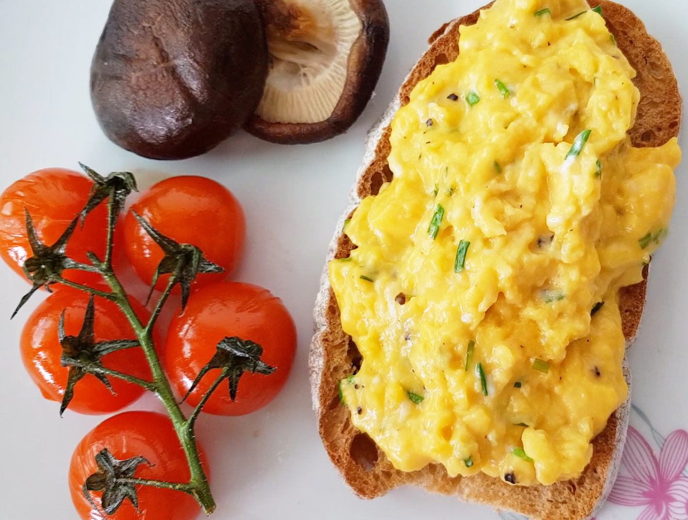

Home

Gordon Ramsay's Scrambled Eggs (1-2 servings)
1-2 eggs
2 nobs of unsalted butter
Salt and pepper(white or black for appearance)
1 tbsp Creme Fresh
Chives (garnish)
Directions:
Lightly beat in air to eggs and cold butter
In a small pot set over medium high heat add egg mixture
Stir and agitate eggs rapidly alternating on and off heat for 10-30 seconds until eggs are congealed to preferrence
When eggs are nearing preferrence stir in creme fresh
Finish with salt and pepper to taste and sprinkle with chives